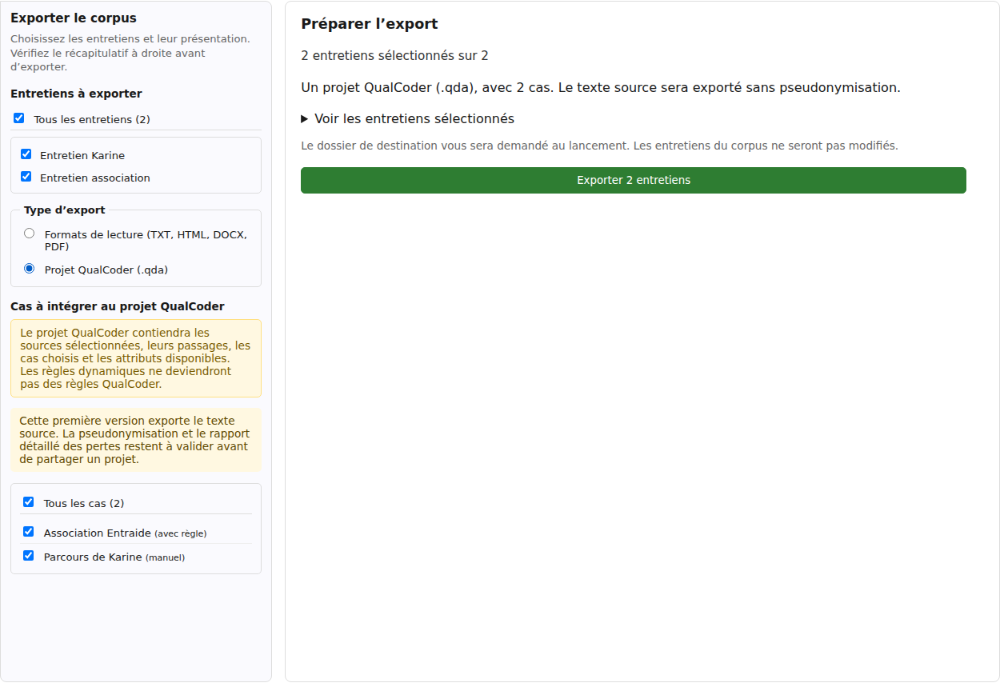
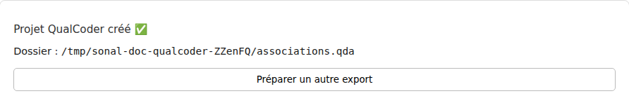

Organiser et exporter
Transférer vers QualCoder
Pour poursuivre une analyse dans QualCoder, SonalPi peut créer un projet contenant vos transcriptions, vos codages et les cas que vous choisissez. Par exemple, vous pouvez transmettre les entretiens d’une association et les passages rassemblés dans un cas consacré à son fonctionnement.
Ce transfert contient le texte original, sans pseudonymisation. Les réglages et le rapport des formats de lecture ne s’appliquent pas à ce projet. Ne le diffusez pas en pensant que les noms ont été remplacés.
Le projet obtenu est indépendant du corpus SonalPi : le transfert ne modifie pas votre travail et ne synchronise pas les deux logiciels. Conservez le corpus natif et sa sauvegarde.
Choisir les entretiens et les cas
- Ouvrez le corpus, puis Organiser & Exporter → Exporter le corpus. Le menu Corpus → Exporter le corpus… ouvre le même outil.
- Cochez les entretiens à transférer. Pour une sélection restreinte, décochez Tous les entretiens, puis cochez les titres voulus.
- Dans Type d’export, choisissez Projet QualCoder (.qda).
- Dans Cas à intégrer au projet QualCoder, cochez les cas souhaités. Décochez Tous les cas pour ne conserver que certains d’entre eux.
- Relisez à droite le nombre d’entretiens et de cas, ainsi que l’avertissement sur l’absence de pseudonymisation.
Vous pouvez exporter des entretiens sans aucun cas. En revanche, vous devez sélectionner au moins un entretien. Les entretiens et les cas sont tous cochés lors de la première ouverture ; vérifiez les choix conservés si vous revenez dans l’outil.

Comprendre ce qui est transféré
| Dans SonalPi | Dans le projet QualCoder |
|---|---|
| Entretiens sélectionnés | Leur transcription complète, en texte, avec leur titre comme nom de source. Choisir un cas ne limite pas ces textes à ses passages. |
| Thèmes et codages | Les thèmes du corpus deviennent des codes et des catégories, avec leur organisation ; les descriptions deviennent des mémos de codes. Les codages des sources sélectionnées sont rattachés au texte. |
| Commentaires de passage | Des annotations avec leur texte et leur auteur. |
| Variables d’entretien non privées renseignées | Des attributs de fichier, avec les libellés des réponses. |
| Cas sélectionnés | Leur nom, leur mémo et les passages disponibles dans les entretiens sélectionnés. |
| Attributs de cas non privés | Les valeurs saisies et les valeurs dérivées disponibles et cohérentes, sous des noms commençant par « Cas — ». |
Ce transfert ne reprend pas tous les objets SonalPi : les notes d’entretien, les recueils, le tableau de bord, les documents du projet et les résultats d’analyse ne sont pas transférés. Les personnes et les locuteurs ne deviennent pas automatiquement des cas ; leurs variables de locuteur ne sont pas transférées comme telles.
Les enregistrements audio et vidéo ne sont pas copiés. Les repères temporels, la lecture synchronisée et les règles de pseudonymisation ne sont pas repris. Il s’agit d’un projet textuel natif QualCoder, pas d’un fichier d’échange REFI-QDA.
Vérifier les matériaux des cas
Un cas rassemble des passages pour une unité d’étude : une personne, une association ou une situation, par exemple. Il peut contenir des passages ajoutés à la main ou trouvés par une règle.
Dans le projet exporté, ces règles deviennent des passages fixes. Elles ne se recalculeront pas lorsque vous modifierez les textes dans QualCoder. Les familles et les recettes d’attributs ne deviennent pas des automatismes dans le logiciel destinataire.
Une sélection partielle d’entretiens peut produire un cas incomplet. Cocher un cas n’ajoute pas automatiquement les entretiens manquants à l’export. Un cas peut même être créé sans passage si aucun de ses matériaux n’est disponible dans la sélection.
Avant le transfert, consultez les cas dans SonalPi et incluez leurs sources utiles. Après le transfert, comparez leurs passages et leurs attributs. Une valeur dérivée calculée sur une sélection réduite ne suffit pas à décrire l’ensemble du cas ; une valeur absente ou contradictoire n’est pas remplacée par une ancienne valeur.
Créer le projet dans un dossier distinct
- Cliquez sur Exporter 1 entretien ou Exporter … entretiens, selon votre sélection.
- Choisissez une nouvelle destination, distincte du corpus SonalPi. Le nom proposé se termine par _qualcoder.qda.
- Conservez l’extension .qda et attendez le message Projet QualCoder créé.
Le résultat est un dossier se terminant par .qda, pas un document unique. Il contient data.qda et des sous-dossiers, notamment audio, documents, images et video. Leur présence ne signifie pas que des médias ont été transférés.
La destination doit être vide ou ne pas encore exister. SonalPi refuse un dossier contenant déjà des fichiers : il ne fusionne pas ce transfert avec un ancien projet QualCoder. Pour déplacer ou transmettre le résultat, gardez le dossier .qda entier.
L’export ne déclenche ni l’enregistrement ni la publication de vos entretiens. L’entretien ouvert est repris dans son état courant ; les autres sont lus depuis leurs données disponibles. Enregistrez d’abord votre travail si vous souhaitez conserver le même état dans SonalPi.
Contrôler le projet dans QualCoder

Dans QualCoder, utilisez l’ouverture d’un projet existant et choisissez le dossier .qda produit. L’ouverture réelle selon votre version de QualCoder reste à vérifier ; ne supprimez pas le corpus SonalPi sur la seule foi du message de réussite.
- Comparez les sources à la liste d’entretiens sélectionnés et relisez plusieurs débuts et fins de transcription.
- Contrôlez les codes, leurs descriptions et les mots réellement couverts par quelques codages, y compris près d’un changement de paragraphe.
- Vérifiez les commentaires, les noms de cas, leurs mémos et les passages associés.
- Comparez les attributs attendus et leurs valeurs. Recherchez particulièrement les cas vides ou incomplets après une sélection partielle.
- Gardez le corpus SonalPi et le projet transféré séparés : les modifications faites dans QualCoder ne reviennent pas automatiquement dans SonalPi.
Le bilan actuel ne fournit pas de rapport détaillé des éléments omis. Un projet créé peut donc demander des corrections ou un nouveau transfert avec davantage de sources.
Vérifier les informations sensibles
Les pseudonymes préparés dans SonalPi ne sont pas appliqués à cet export. Le texte original, les titres des sources, les commentaires et leurs auteurs, les noms et mémos de cas ainsi que les libellés de thèmes peuvent identifier des personnes.
Les variables et attributs marqués privés sont exclus, mais ce statut ne masque pas les mêmes informations écrites ailleurs. Les thèmes du corpus sont transférés même s’ils ne sont pas utilisés dans les entretiens choisis.
Un transfert non pseudonymisé peut convenir à un échange au sein du même projet avec des destinataires autorisés. Adaptez le contenu à l’usage prévu et vérifiez les conditions de conservation. Si vous cherchez une copie à relire avec les remplacements configurés, utilisez plutôt les formats de lecture pseudonymisés.
Reprendre après une annulation ou un échec
Annuler le choix de destination ne crée pas de projet pour ce lancement. Cliquez sur Préparer un autre export pour retrouver les réglages. Contrairement au lot de lecture, le transfert QualCoder ne propose pas d’arrêt après l’entretien courant.
Si la destination contient déjà des fichiers, choisissez un nouveau nom après Préparer un autre export. Si un entretien sélectionné est illisible, le transfert échoue au lieu de continuer avec les autres : vérifiez la source, puis relancez l’export. Ne prenez pas un ancien dossier pour le résultat de la tentative en échec.